de Casteljau's algorithm is a recursive method used to evaluate points on a Bezier curve using linear interpolation between control points. A Bezier curve of degree n is defined by n+1 control points and a parameter t that ranges between 0 and 1. The algorithm works by repeatedly interpolating between consecutive control points until a single point remains.
Given a set of control points p₁, p₂, ..., pₙ and a parameter t, the algorithm computes intermediate control points using the linear interpolation formula:
p' = (1 − t)pᵢ + t pᵢ₊₁
This operation generates a new set of n−1 points. The same interpolation process is then applied recursively to these new points, producing smaller and smaller sets of points until only a single point remains. The final point is guaranteed to lie on the Bezier curve at parameter t. This recursive interpolation also visually illustrates how the curve is constructed from the original control points.
To implement this algorithm, I completed the function BezierCurve::evaluateStep(...).
This function performs one level of de Casteljau subdivision. It takes the current vector of points and generates a new vector of intermediate points by interpolating between each pair of adjacent points.
For each pair of points pᵢ and pᵢ₊₁, the function computes the interpolated point using the class member parameter t:
(1 − t)pᵢ + t pᵢ₊₁
These new interpolated points are stored in a new vector using push_back().
The resulting vector contains one fewer point than the input vector and represents the next level of the de Casteljau subdivision process.
When visualizing the curve in the meshedit viewer, pressing the E key repeatedly performs successive subdivision steps, showing the intermediate control points at each level.
Eventually, a single red point remains, which represents the evaluated point on the Bezier curve.
Pressing C toggles the display of the full Bezier curve that is generated from the control points.
To demonstrate the algorithm, I created my own Bezier curve using six control points.
Using the meshedit viewer, I stepped through the evaluation process by repeatedly pressing the E key, which performs one level of de Casteljau subdivision each time.
The screenshots below show the progression from the original control points to the final evaluated point on the curve.
Level 0: Original control points

Level 1: First interpolation step

Level 2: Second interpolation step

Level 3: Third interpolation step

Level 4: Fourth interpolation step

Level 5: Final evaluated point on the Bezier curve

Pressing the C key toggles the visualization of the full Bezier curve generated from the control points.
The green curve shown below represents the final Bezier curve constructed using the de Casteljau algorithm.

To further test the implementation, I moved several of the original control points by dragging them in the viewer.
I also modified the parameter t by scrolling on the trackpad.
Changing the control points alters the shape of the curve, while changing t moves the evaluated point along the curve.
The screenshot below shows a slightly different Bezier curve produced after modifying both the control points and the parameter value.

de Casteljau's algorithm can be extended from Bezier curves to Bezier surfaces by applying the same 1D interpolation process in two directions.
A Bezier surface is defined by an n × n grid of control points and two parameters, u and v.
To evaluate a point on the surface, I first treat each row of control points as a Bezier curve and evaluate it using the parameter u.
This produces one intermediate point for each row of the grid.
These resulting points form another Bezier curve in the perpendicular direction.
I then evaluate this new curve using the parameter v, which produces the final point on the Bezier surface corresponding to the parameters (u, v).
I implemented three functions to evaluate the Bezier surface.
The function evaluateStep(...) performs one interpolation step between adjacent control points using the parameter t.
The function evaluate1D(...) repeatedly applies this step until only one point remains, giving the final point on a Bezier curve.
Finally, the function evaluate(...) first evaluates each row of the control point grid at parameter u, producing a set of intermediate points.
These intermediate points are then evaluated again at parameter v to compute the final point on the Bezier surface.

The image above shows the Bezier surface generated by evaluating bez/teapot.bez using my implementation.
To compute an area-weighted vertex normal at a given vertex, I iterated over all
faces (triangles) incident to that vertex using the half-edge data structure.
Starting from the vertex's associated half-edge, I repeatedly followed
twin()->next() to walk around all neighboring faces in a loop.
For each non-boundary face, I retrieved the positions of the triangle's three vertices and computed the cross product of two edge vectors originating from the current vertex:
n += (p1 − p0) × (p2 − p0)
The cross product of two edge vectors is perpendicular to the face and has a
magnitude equal to twice the triangle's area. This means that summing these
cross products automatically weights each face's normal contribution by its area —
larger triangles contribute more to the final normal than smaller ones.
After accumulating all weighted normals, I normalized the result using
.unit() to return a unit normal vector.
The screenshots below show dae/teapot.dae with default flat shading
and with Phong shading using area-weighted vertex normals (toggled with Q).
Flat shading computes a single normal per triangle face, producing a faceted
appearance. Phong shading interpolates the area-weighted vertex normals across
each triangle, producing a much smoother appearance across the surface.
Flat shading (default)
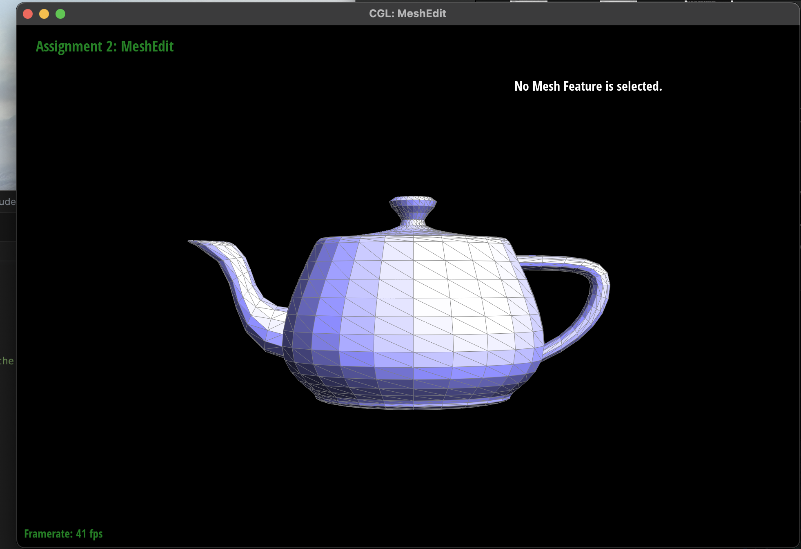
Phong shading with area-weighted vertex normals
Flat shading (default)
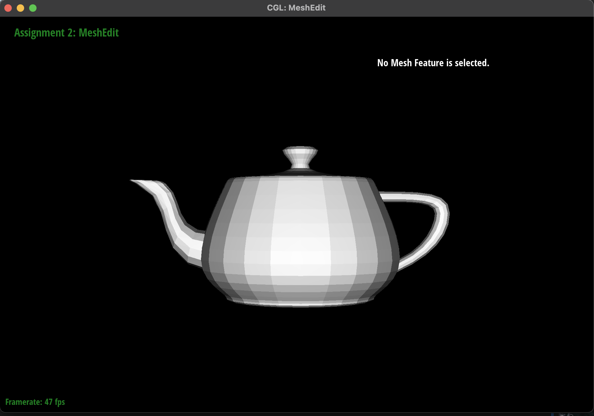
Phong shading with area-weighted vertex normals
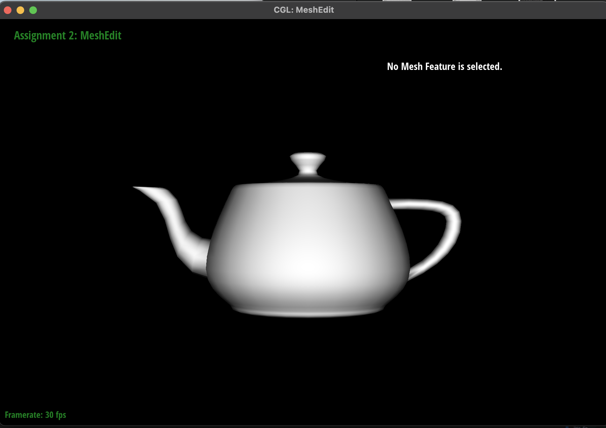
To implement the edge flip operation, I followed the recommended approach of carefully labeling all mesh elements before and after the flip, then reassigning all pointers explicitly. Given the shared edge (b,c) between two triangles (a,b,c) and (c,b,d), a flip converts it into edge (a,d) connecting the other two vertices, producing new triangles (a,d,c) and (a,b,d).
I first collected all existing mesh elements — 10 half-edges, 4 vertices,
5 edges, and 2 faces. I then reassigned all pointers for every element in the
modified mesh using setNeighbors(...) for each half-edge, even for
pointers that did not change. This approach of reassigning everything, rather
than only the changed pointers, helped avoid subtle bugs from missed assignments.
The function returns immediately without doing anything if the edge is on a
boundary.
I did not encounter any major issues during implementation. The key insight was to reassign all pointers of all elements rather than trying to figure out which ones changed, which kept the implementation clean and correct.
The screenshots below show the teapot mesh before and after performing several edge flips. The mesh remains intact with no holes or artifacts after flipping.
Before edge flips
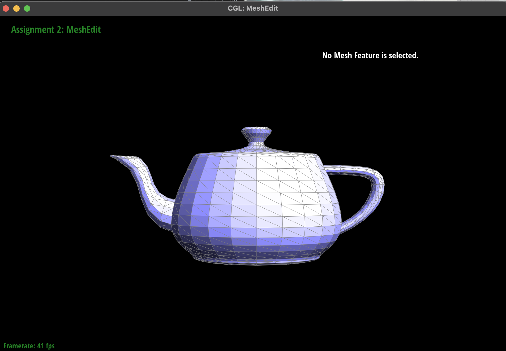
After edge flips
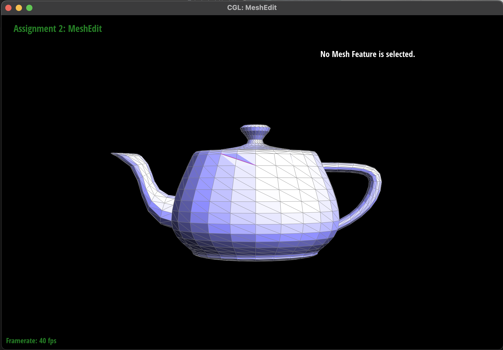
To implement the edge split operation, I followed the same careful approach as edge flip — labeling all existing mesh elements first, then creating new elements, and finally reassigning all pointers explicitly. Given the shared edge (b,c) between two triangles (a,b,c) and (c,b,d), a split inserts a new vertex m at the midpoint of (b,c) and connects it to vertices a and d, yielding four new triangles: (a,b,m), (m,c,a), (b,d,m), and (d,c,m).
I first collected all 10 existing half-edges, 4 vertices, 5 edges, and 2 faces. I then created the new elements needed: 1 new vertex m, 3 new edges, 2 new faces, and 6 new half-edges. The position of the new vertex m was set to the midpoint of the original edge using:
m.position = (vb.position + vc.position) / 2.0
Finally, I used setNeighbors(...) to reassign all pointers for every
half-edge in the modified mesh, and explicitly set the halfedge pointers for all
vertices, edges, and faces. The new vertex's halfedge was set to point along the
original split edge as required by the spec.
The most important trick I used was to reassign all pointers for all elements rather than only the ones that changed. This approach, while more verbose, eliminates an entire class of subtle bugs caused by missed pointer assignments. Drawing out the before and after diagrams on paper and carefully labeling every half-edge, vertex, edge, and face before writing any code was also very helpful in keeping track of all the elements.
The screenshots below show the teapot mesh before and after performing several edge splits. Each split inserts a new vertex at the midpoint of the selected edge and subdivides the two neighboring triangles into four.
Before edge splits
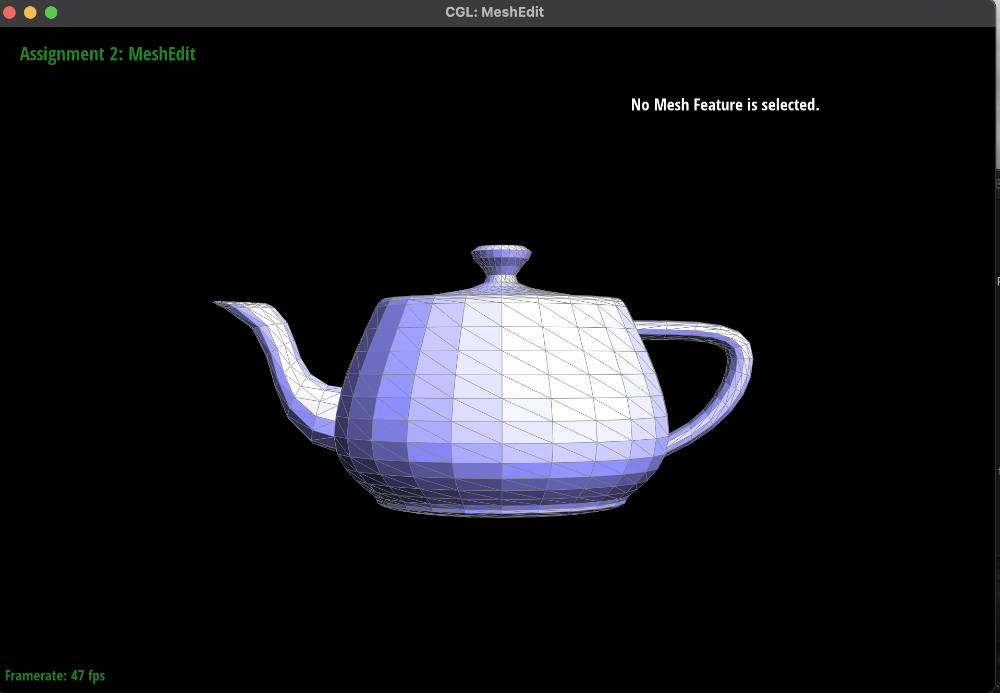
After edge splits
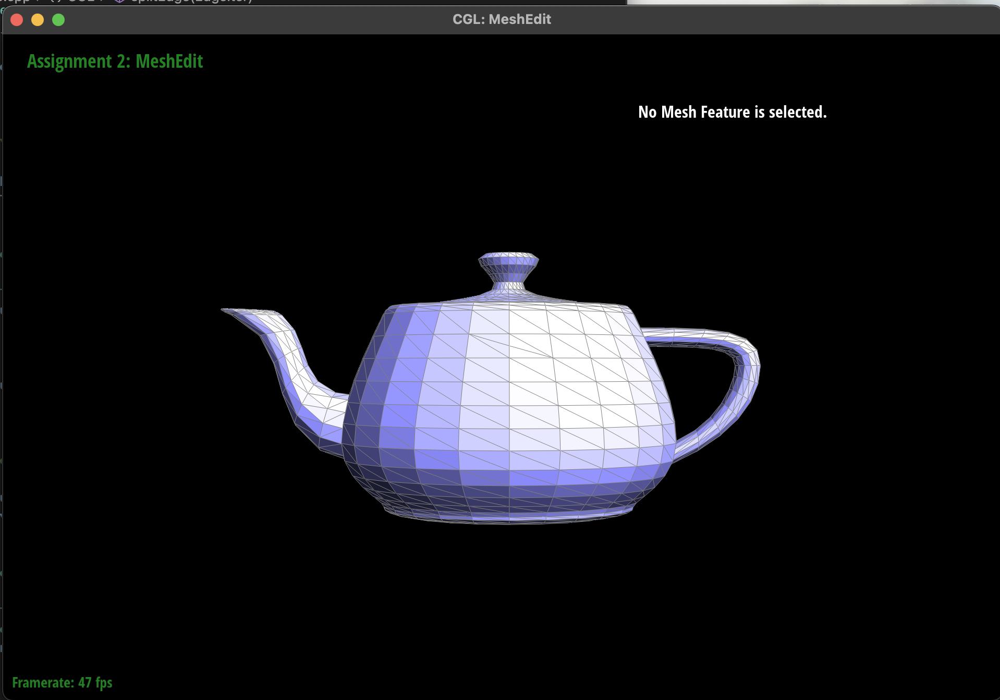
The screenshot below shows the mesh after performing a combination of both edge splits and edge flips. The mesh remains intact with no holes or artifacts, confirming that both operations work correctly together.
Before splits and flips
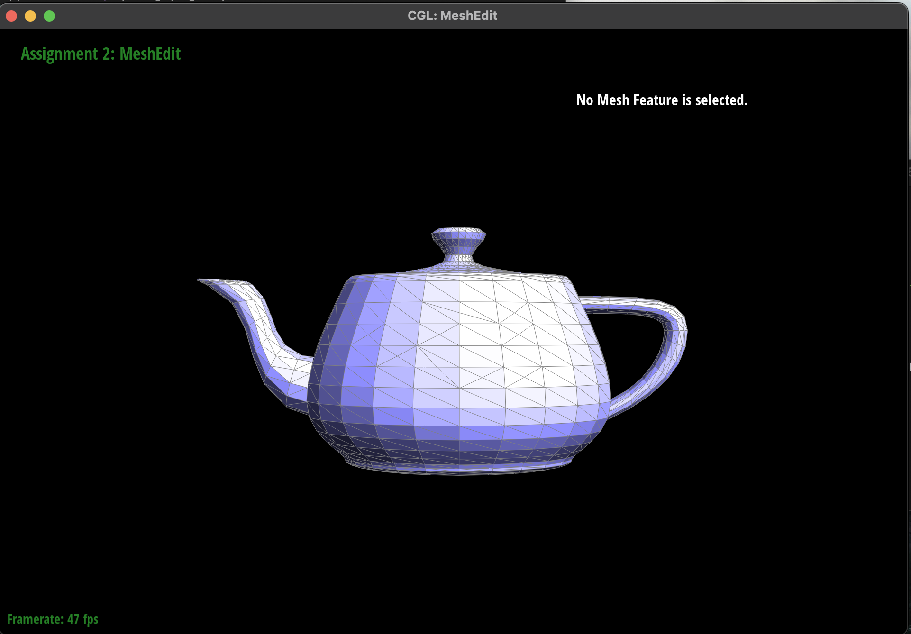
After combination of splits and flips
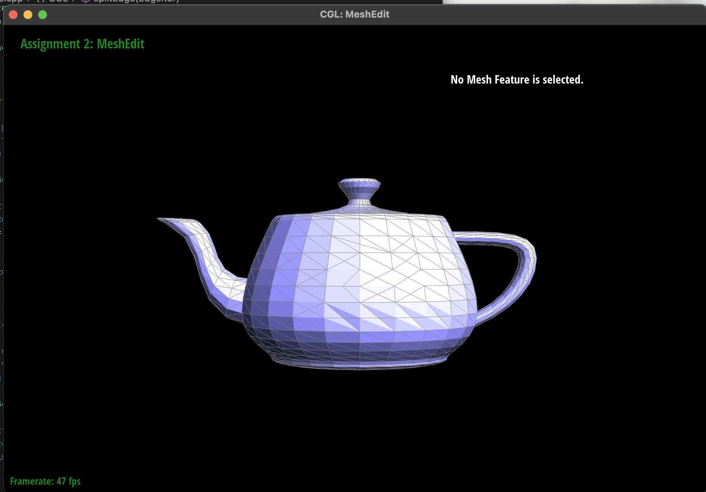
I also implemented support for splitting boundary edges. For a boundary edge, only one neighboring face is an interior triangle — the other is a virtual boundary face. The implementation splits the interior triangle into two new triangles in the same way as a regular split, while also inserting the new vertex into the boundary face by updating the boundary half-edge pointers. This correctly maintains the manifold property of the mesh along the boundary.
Before boundary edge split
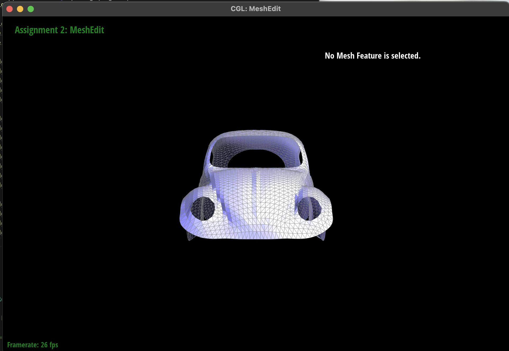
After boundary edge split
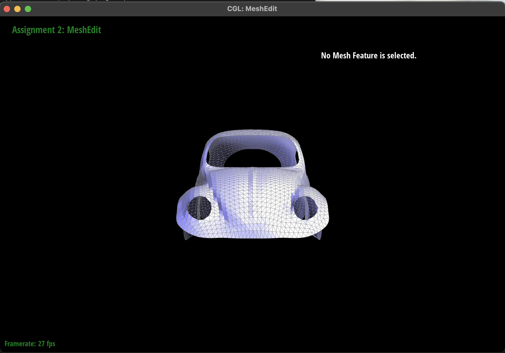
I implemented loop subdivision in three main steps as recommended. In Step A,
I first computed the updated positions for all old vertices using the Loop
subdivision weighting rule and stored them in Vertex::newPosition,
without modifying Vertex::position yet. For each old vertex of
degree n, the weight u is 3/16 if n=3, and 3/(8n) otherwise. The new position is:
(1 - n * u) * original_position + u * neighbor_position_sum
I also computed the positions for new edge midpoint vertices using the formula:
3/8 * (A + B) + 1/8 * (C + D)
where A and B are the endpoints of the edge and C and D are the opposite vertices
of the two neighboring triangles. These were stored in Edge::newPosition.
In Step B, I split every original edge in the mesh by iterating only over the
original edges using a counter to avoid splitting newly created edges. After each
split, I marked the new vertex as isNew = true and assigned it the
precomputed edge midpoint position. I also carefully marked which edges were new
using Edge::isNew. I then flipped any new edge that connected an old
vertex and a new vertex. Finally in Step C, I copied all newPosition
values into position for every vertex.
The most important trick was to save e->newPosition into a local
variable before calling splitEdge(e), since the split operation
modifies the edge. I also used a counter-based loop instead of iterator-based
to safely iterate over only the original edges without accidentally splitting
newly created ones.
The screenshots below show the teapot mesh at different levels of loop subdivision. With each iteration, the mesh becomes smoother and more detailed as triangles are subdivided and vertex positions are updated using the weighted average.
Before subdivision
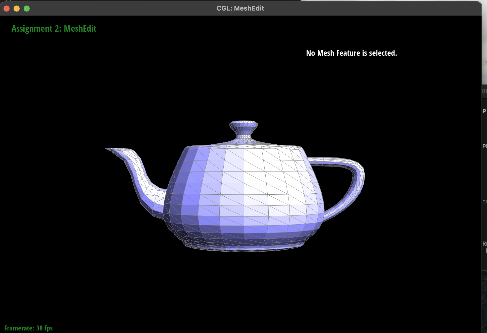
After 1 iteration of loop subdivision
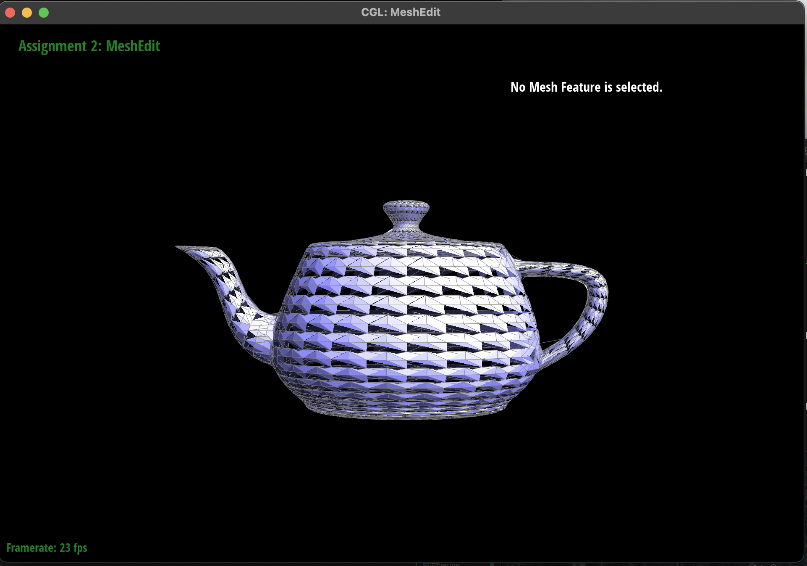
After 2 iterations of loop subdivision
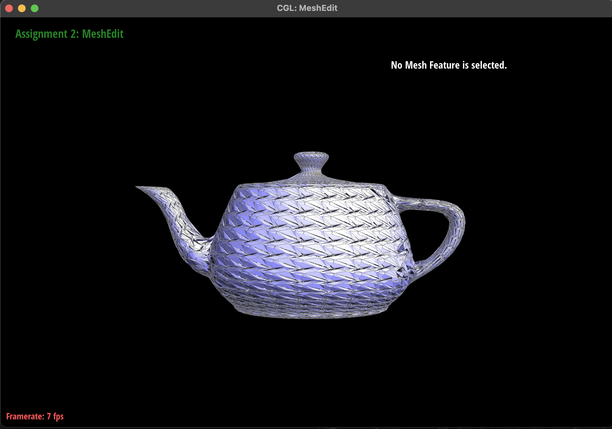
After repeated loop subdivision, sharp corners and edges become increasingly smooth and rounded. This is because the weighted average used to update vertex positions pulls each vertex towards the average of its neighbors, gradually softening any sharp features. One way to reduce this effect is to pre-split edges near sharp features before subdividing, which increases the local vertex density and gives those regions more resistance to smoothing.
When performing loop subdivision on dae/cube.dae, the cube becomes
slightly asymmetric after repeated subdivisions. This happens because each face
of the cube has only one diagonal edge, making the triangulation of each face
asymmetric. Since the Loop subdivision rule updates vertex positions based on
their neighbors, and the neighborhood of each vertex is asymmetric due to the
diagonal edges, the resulting subdivided mesh is also asymmetric.
Cube before subdivision
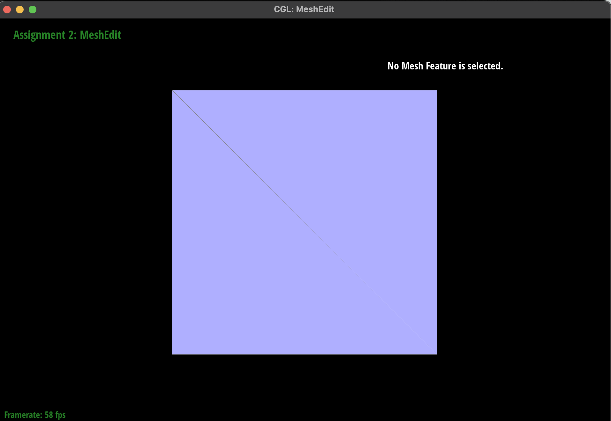
Cube after repeated subdivision (asymmetric)
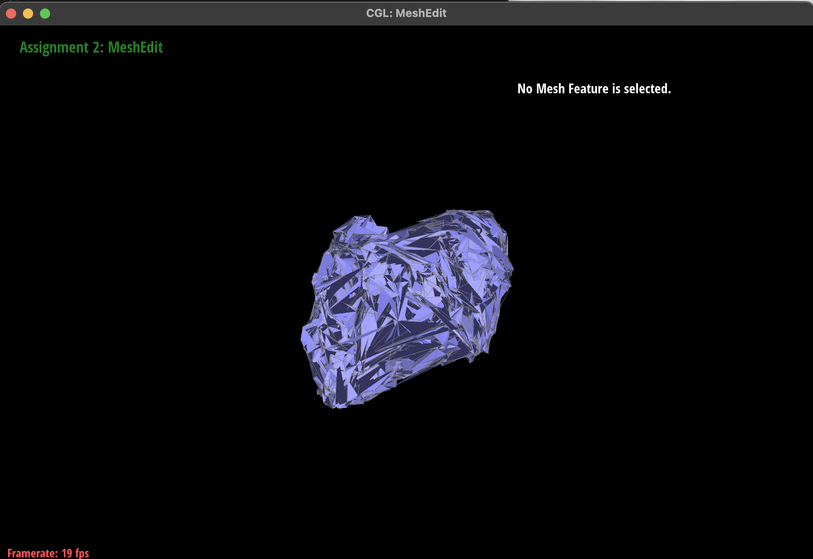
To fix the asymmetry, I pre-processed the cube by flipping the diagonal edge on each face so that every face has an X pattern, making the mesh symmetric about all axes before subdivision. With this pre-processing, the cube subdivides symmetrically because every vertex now has a symmetric neighborhood, so the weighted average update affects all vertices equally. The screenshots below show the cube after pre-processing and after several iterations of loop subdivision, which now produces a symmetric rounded shape.
Cube after pre-processing with edge flips (X pattern on each face)
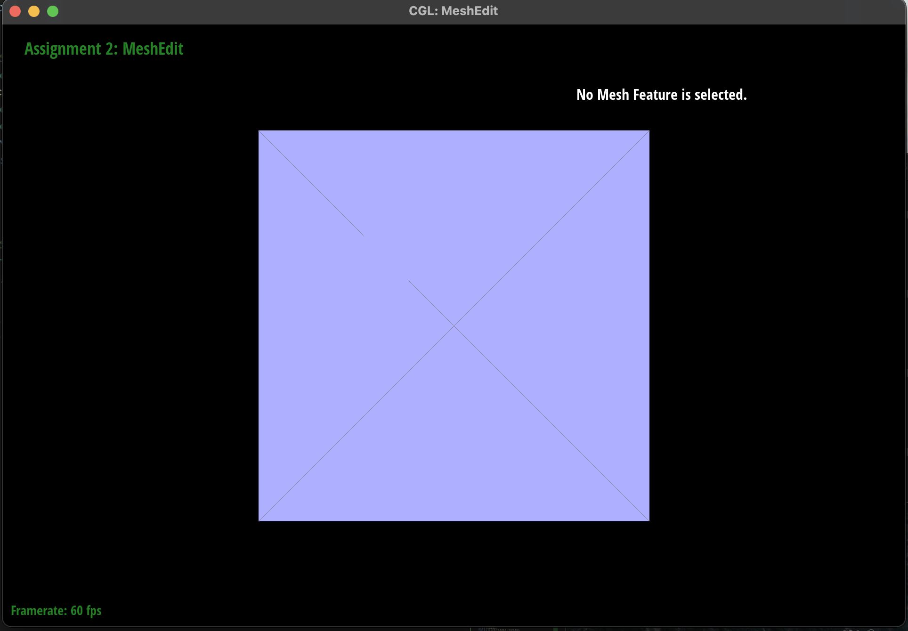
Cube after repeated subdivision with pre-processing (symmetric)
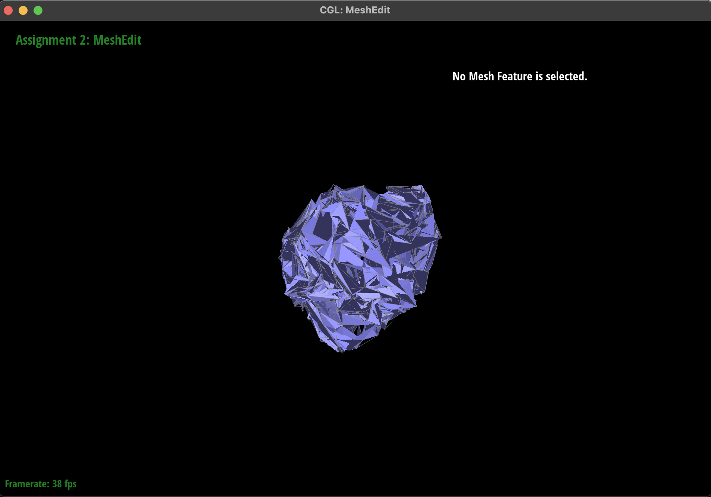
I implemented support for meshes with boundary edges. For boundary vertices, I used a different weighted average formula that only considers the two boundary neighbors:
3/4 * original_position + 1/8 * (left_neighbor + right_neighbor)
For new vertices inserted on boundary edges, I used the simple midpoint formula instead of the regular Loop rule:
1/2 * (A + B)
This correctly maintains the shape of the boundary while still smoothing the
interior of the mesh. The screenshots below show loop subdivision applied to
dae/beetle.dae, which has open boundaries, before and after
subdivision.
Boundary mesh before subdivision
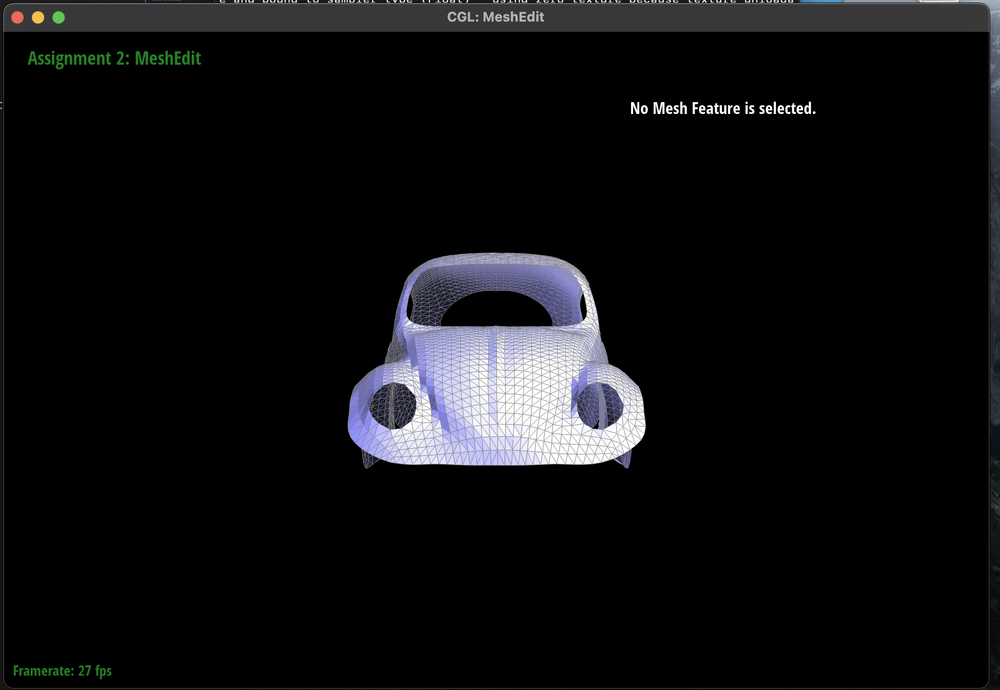
Boundary mesh after subdivision
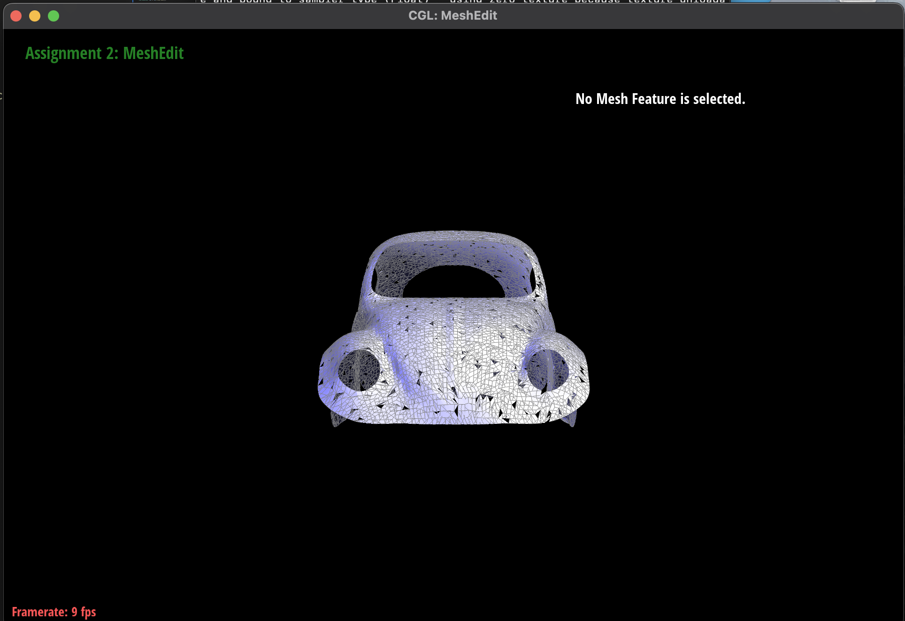